Casa na beira do lago em Três Ranchos
Piscina, área gourmet com fogão a lenha e gramado que desce até a água. Um lugar para juntar a família ou os amigos no fim de semana.
- Até 10 hóspedes
- 3 quartos
- 4 banheiros
- 3 km do centro
- Acesso direto ao lago
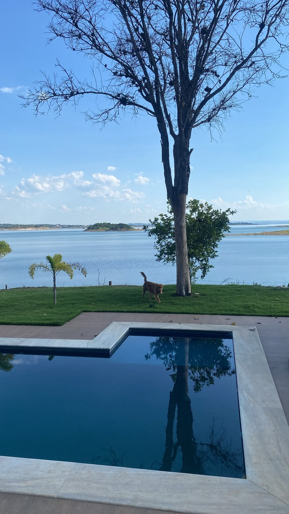
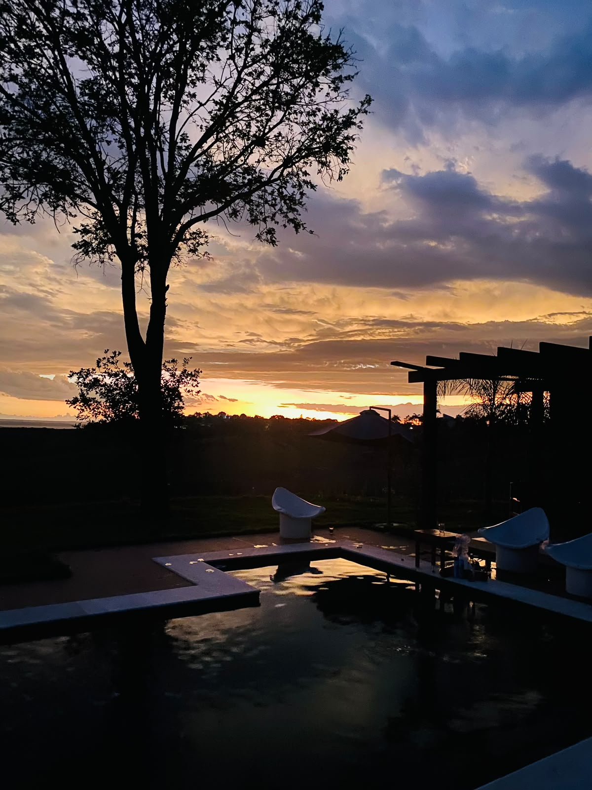
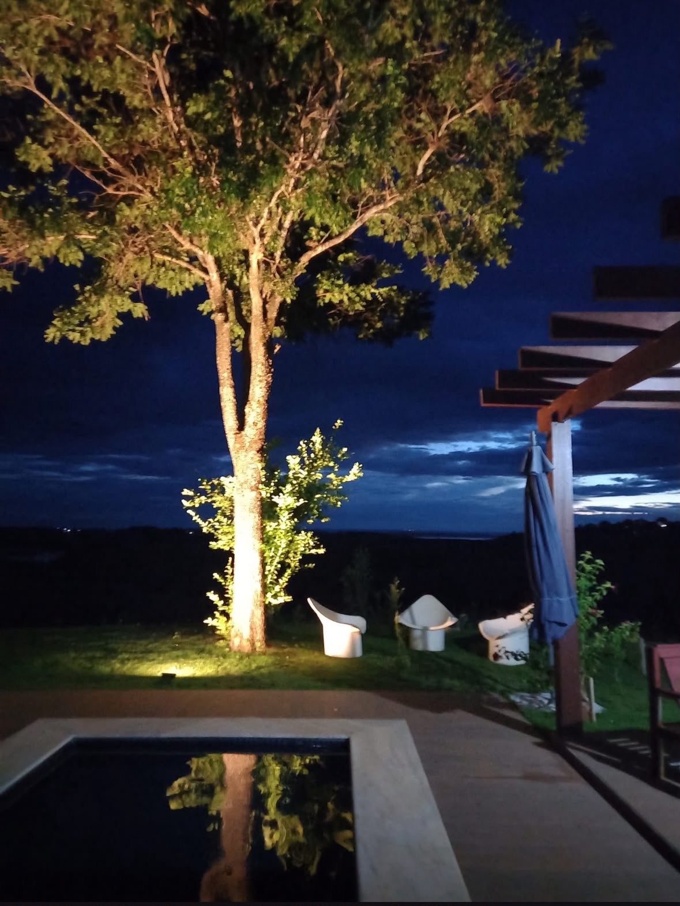
Um dia no Rancho Aroeira
Do café da manhã com vista para o lago até a noite com o jardim aceso. Veja como cada canto da chácara é aproveitado ao longo do dia.
-
7h
Café olhando o lago
Cedo, a água fica parada e a ilha aparece inteira na frente da casa. A piscina em L fica entre o gramado e a margem.
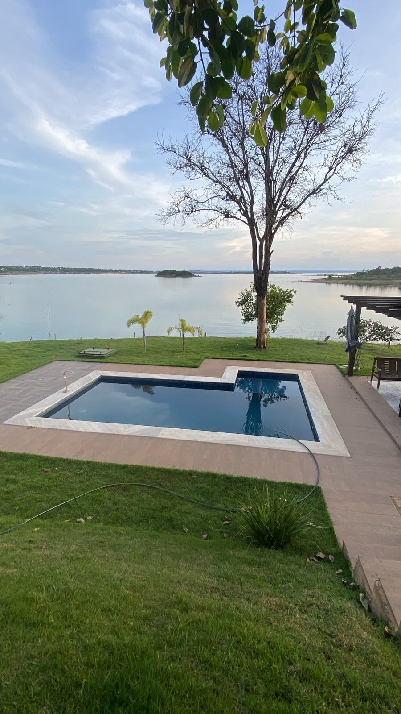
-
10h
Piscina e gramado até a água
A piscina tem deck amplo e borda em pedra. O gramado desce até a beira da represa, com espaço para brincar, caminhar e ver o lago de perto.
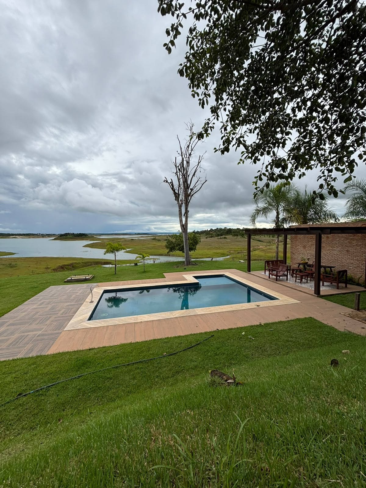
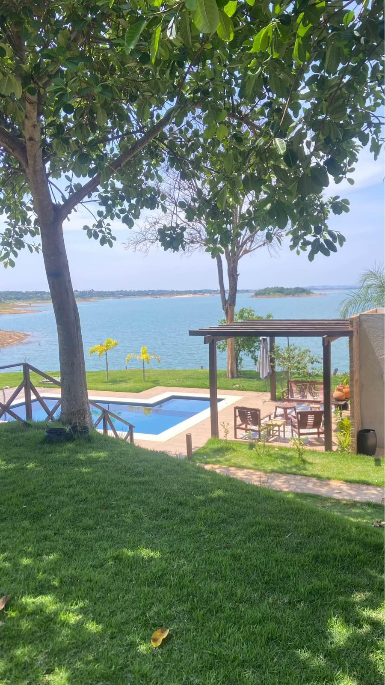
-
12h
Almoço na área gourmet
Churrasqueira, fogão a lenha e forno de tijolinho ficam lado a lado, perto da mesa rústica comprida com bancos. A cozinha da casa tem geladeira e fogão de seis bocas com forno.
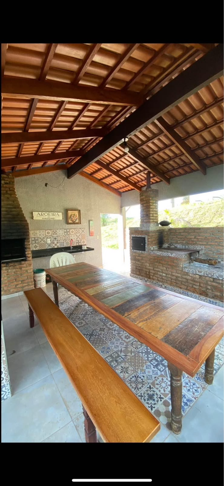
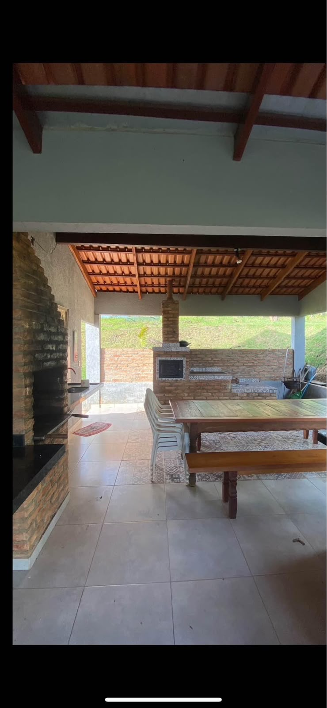
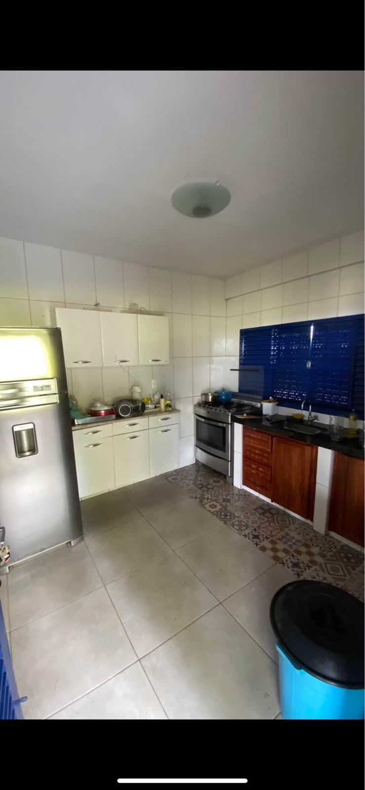
-
15h
Sombra na varanda
A varanda coberta tem dois sofás e mesa de madeira de demolição, de frente para o jardim. Lá embaixo, o pergolado ao lado da piscina tem mesa, bancos e guarda-sol.
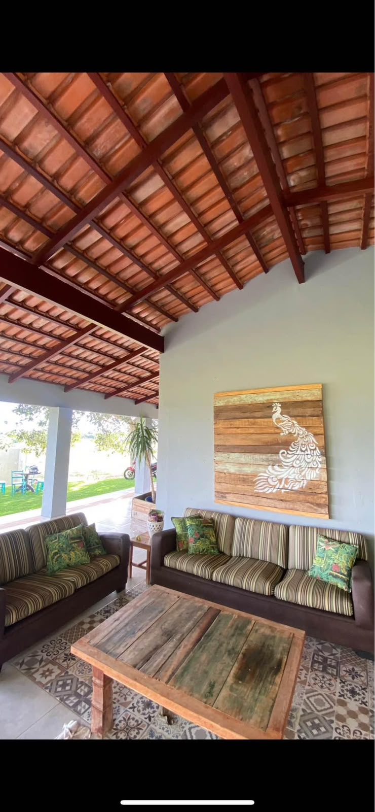
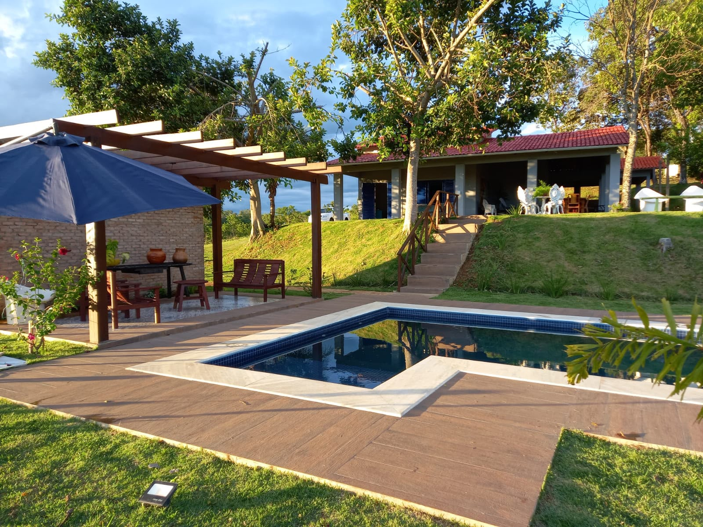
O que tem na chácara
- Acesso ao lagoGramado até a margem da represa
- PiscinaEm L, com deck e borda em pedra
- Churrasqueira e fogão a lenhaCom forno de tijolinho
- Mesa rústica compridaCom bancos, para a turma toda
- Cozinha equipadaGeladeira e fogão de seis bocas
- Varanda cobertaSofás e mesa de demolição
- Pergolado com mesaAo lado da piscina
- EstacionamentoVaga para carros dentro da chácara
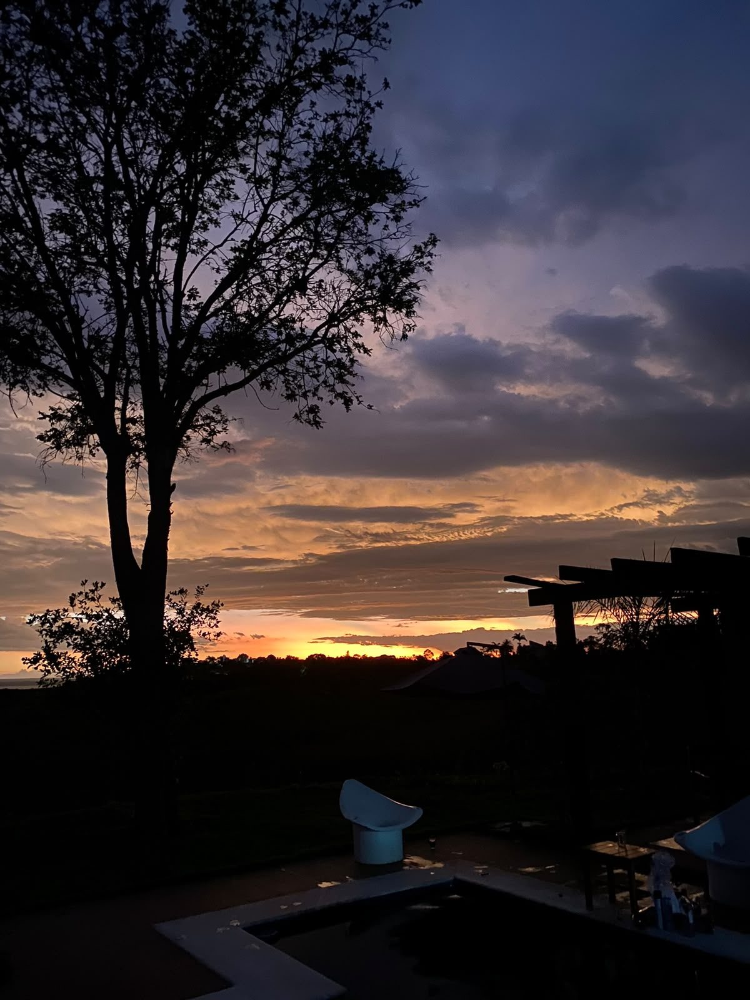
O sol se põe na frente da piscina
A casa fica de frente para o poente. No fim da tarde, o céu muda de cor atrás das árvores do gramado.
-
20h
Noite no jardim
As árvores, a escada e a piscina têm iluminação. Do outro lado do lago aparecem as luzes da cidade.
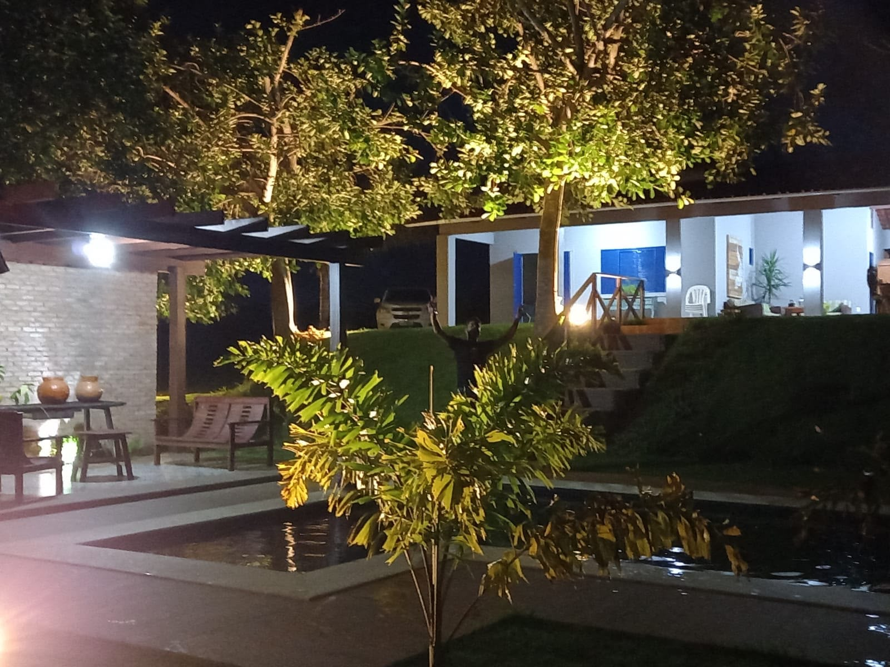
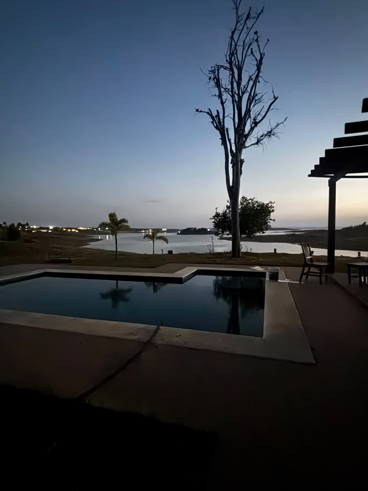
-
22h
Hora de descansar
A casa tem três quartos e quatro banheiros. Dois banheiros ficam dentro da casa, e um deles é de suíte. Os outros dois são externos.
- Quartos
- 3
- Camas de casal
- 3
- Colchões de solteiro
- 3
- Banheiros dentro da casa
- 2 (1 suíte)
- Banheiros externos
- 2
- Hóspedes
- até 10
Todas as fotos
Toque em uma foto para ver em tamanho grande.
Como chegar
Três Ranchos fica no sudeste de Goiás, às margens do lago da represa de Emborcação. A chácara está perto do centro, então dá para ir ao mercado ou à padaria e voltar em poucos minutos.
- 0 kmCentro de Três RanchosMercado, padaria e restaurantes
- 3 kmRancho AroeiraCerca de 5 minutos de carro
Quem já ficou aqui
Avaliações públicas de hóspedes que reservaram pelo Airbnb.
Vista maravilhosa! Só pela vista já vale a pena. Churrasqueira, fogão a lenha, tudo excelente. Dentro da casa é simples, mas aconchegante. O pessoal foi muito solícito e nos auxiliou em tudo que precisamos. Voltaremos mais vezes. Recomendo.
Fantástico! Anfitrião super acolhedor, vista incrível, casa aconchegante e muito bem localizada. Um paraíso mesmo.
Local com uma vista espetacular.
Pedir uma reserva
Escolha as datas e o número de pessoas. Ao tocar em enviar, o WhatsApp abre com a mensagem pronta. Respondemos com a disponibilidade e o valor.
Se preferir, chame direto neste número: